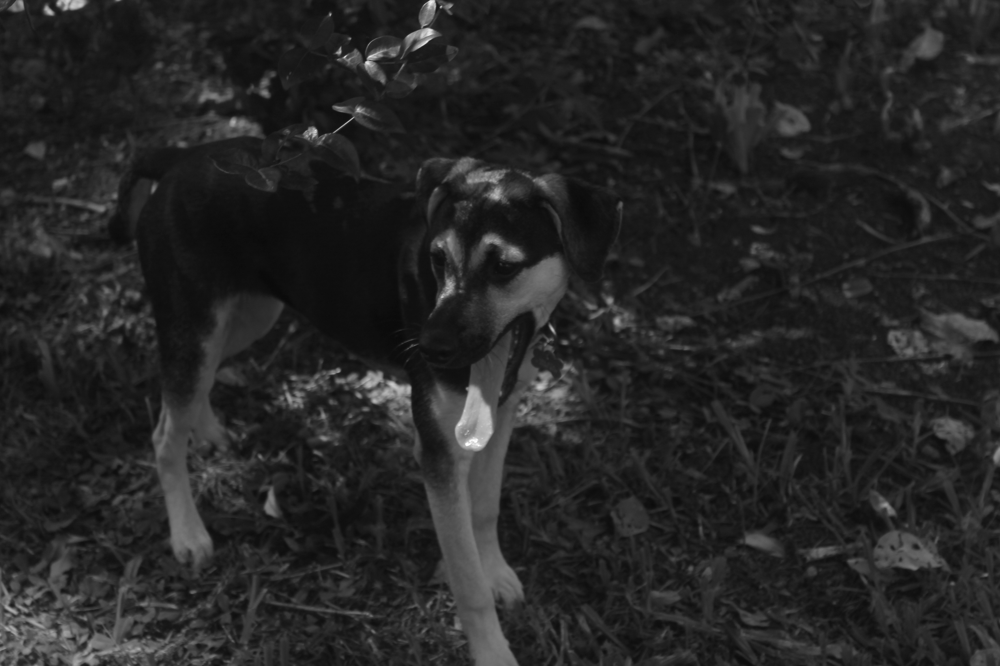

Daniel Teixeira

MATH 1000 tutorials notes
I am a PhD candidate at Dalhousie University under supervision of Theo Johnson-Freyd .
My interests revolve around homotopy and category theory at large, especially where they meet topological physics.
On my mind (Oct 25): (∞,∞)-categories, categorical spectra, factorization systems, reflective subcategories, supercohomology, adjunctions, catastrophes, formalization (Lean, Mathlib).
contact: daniel.teixeira@dal.ca
Recent activities:
21 Oct 25: talk at the ATCAT about categories as directed spaces. notes
20 Oct 25: talk at the Dalhousie graduate seminar about sines of rational fractions of \pi. notes
17-18 Oct 25: MSCS 2025 at Cape Breton University.
15 Oct 25: we played the Natural Number Game at the Dalhousie Honours Seminar.
18 Sept 25: notes from the STOAT 2024 are available at the arXiv.
13-20 Sept 25: Heidelberg Laureate Forum .
1-12 Sept 25: Higher Structures school and workshop at the University of Hamburg. gong show notes
30 Jul - Aug 2 25: teaching Scratch at the Dalhousie Indigenous Math Camp 2025 .
8 Jul 25: preprint Mutual Influence of Symmetries and Topological Field Theories (joint with Matthew Yu) is out.
6-11 Jul 25: teaching Scratch at the BEA Math Camp . Check out our students projects here !
30 Jun - 3 Jul 25: Workshop on QFT and Topological Phases via Homotopy Theory and Operator Algebras at Harvard University.
18 Jun 25: talk at the FMCS 2025 about a model structure for 2-fibrations. notes
09 Jun 25: talk at the 2025 CMS Summer Meeting about monoidal homotopy bicategories. notes
Summer 25: teaching MATH 2030 - Matrix Theory & Linear Algebra I .
4 Apr 25: judge at the Halifax Sci-Tech expo .
27 Mar 25: judge at the South Shore regional science fair .
11 Mar 25: talk at the ATCAT about monoidal homotopy bicategories. (notes lost to the void)
Winter 25: teaching MATH 2040 - Matrix Theory & Linear Algebra II .
27 Nov 24: talk at the Dalhousie honours seminar about catastrophes and higher categories. slides
26 Nov 24: talk at the ATCAT about a model structure for 2-fibrations. notes
11 Nov 24: talk at the UIUC Graduate Student Homotopy Theory Seminar about Hq (K(G,n),Z/2) and monoidal groupoids.
2-3 Nov 24: Midwest Topology Seminar at the University of Chicago.
Oct-Nov 24: visit at UIUC under supervision of Dan Berwick-Evans.
16 Oct 24: talk at the eCHT Kan seminar Fall 2024 about this paper . notes
14-19 Oct 24: visit at the Perimeter Institute.
2 Oct 24: informal conversation about 2-fibrations. notes
1 Oct 24: talk at the Dalhousie graduate seminar about the Eckmann-Hilton argument in higher dimensions. notes
23-27 Sept 24: Scottish Talbot on fusion 2-categories. notes by Adrien
8 Jul - 2 Aug 24: School on Univalent Mathematics at the University of Minnesota.
20-25 Jul 24: two talks at the Dalhousie Math Camp about Geometry & Topology.
7-12 Jul 24: teaching Scratch at the BEA Math Camp . Check out our students projects here !
3-14 Jun 24:
Thematic Program in Field Theory and Topology at the University of Notre Dame. poster
20-24 May 24: Atlantic TQFT Spring School 2024 at the Memorial University of Newfoundland.
29 Apr 24: informal conversation about relating Morse theory, catastrophes, and higher categories. notes
18-22 Mar 24: Higher Categorical Tools for Quantum Phases of Matter at Perimeter Institute.
18-23 Feb 24: Matem�ticas en Cono Sur 2 at UdelaR, Montevideo. I was on the group working with 2-fibrations.
Winter 24: teaching a section of MATH 1215 - Life Sciences Calculus.
30 Nov 23: I passed my comprehensive exam. You can see details about my thesis project here .
17 Nov 23: talk at the USP categories seminar about ladders of 2-categories. notes (in Portuguese)
Fall 23: Inclusive STEM Teaching course by the CIRTL Network . At Dalhousie, Sarah Chisholm organized in-person meetings.
Fall 23: online (∞,2)-workshop organized by Moser, Razekh and Rovelli.
1 Nov 23: talk at the Dalhousie honours seminar about category theory. notes
26 Oct 23: genesis of the spectral sequences reading group at Dalhousie. details
14 Oct 23: talk at the MSCS 2023 about ladders of 2-categories. slides
6 Oct 23: talk at the Dalhousie graduate seminar about the toric code.
3-8 Sept 23: GCS2023 summer school at Les Diabl�rets, Switzerland.
19-23 Jun 23: �cole d'�t� sur les fibr�s et leur connexions at the Universit� de Sherbrooke.
1-5 May 23: Atlantic TQFT spring school at Wolfville, NS.
8 Mar 23: talk at the Dalhousie honours seminar about the topology of our spacetime. notes
21 Sept 22: talk at the TQFT reading group about the Morita bicategory. notes
22 Feb 22: I defended my master's thesis ! Go check it out. 🇧🇷
Read more
Dalhousie University is in Mi'kma'ki, the ancestral and unceded territory of the Mi'kmaq.